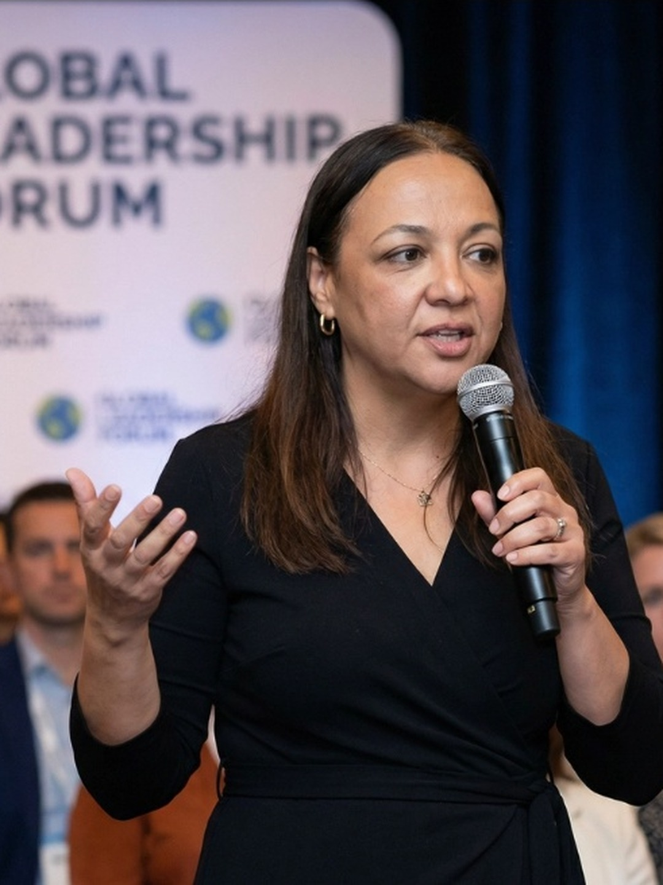

Cross-functional leadership across product, engineering, and operations. Known for bringing structure without bureaucracy.
Team alignment
We only win
if we all win
A focused position, a finished LinkedIn profile, and a practical plan for becoming the advisor founders call when the team stops moving together.
One position
One character
One profile, ready to paste
Thirty days of direction
One portable AI pack

Your Strategy
Be the advisor who reads the whole system
Positioning statement
Samah helps early-stage and funded startups turn product complexity into aligned execution, working where product strategy, leadership clarity, and team performance meet.
Most product advisors stay in the product layer or the people layer. Samah works both at once: technical enough to go deep on architecture, human enough to treat team performance and product quality as the same system.
- Category
- Product and leadership advisor, fractional CTO
- Distinctive idea
- All Win
- Founder role
- Samah is the brand. Founders choose her because of who she is, not a methodology or a firm name.
The Focus Star
The whole strategy in five lines
-
Product
Team alignment as a performance engine.
The product is the end of the confusion loop: clarity across leadership, product vision, and execution.
-
People
Early-stage founders and funded startups building with intention.
Persona: The founder whose team has stopped moving together. Series A approaching, the team doubling, or the product direction unclear and execution stalling.
-
Purpose
Role clarity so people can do meaningful work.
The purpose is structural rather than motivational. Clear roles, clear ownership, clear shared direction so people can contribute at the highest level their role allows.
-
Promise
We Only Win If We All Win: alignment as competitive advantage
Brand DNA: All Win. The promise is collective performance: no engagement optimizes one person or one department at the expense of the system.
-
Personality
The coach who believes in you and demands your best.
Technically sharp, deeply human, decisively warm. Authority comes from clarity and consistency, not dominance.
Point of view
When teams don't know who owns what, the product suffers. Not because people don't care. Because the system isn't clear enough for them to act from.
01Alignment is a performance system rather than a culture initiative applied after the work is done.
02Most execution problems are clarity problems rather than talent problems, and that needs a different fix.
03A strong team is not a team that never argues. It is a team that argues about the right things.
The proof bank
What makes the promise credible
The core quote, 'we only win if we all win,' works as the filter applied to every piece of advice.
Every engagement starts with a system-level read of where roles and ownership are unclear rather than a star-player intervention.
Move-fast-break-people founders and investors who treat people as interchangeable execution units are not the fit. The filter makes the advisory work more effective for the founders who are.
Client stories, outcomes, and numbers go public only with a named client's permission and in words Samah approves. None are published here.
Your Identity
Sound direct, stay warm, never vague
Personality
One voice across every channel
The coach who believes in you and demands your best.
This is the character every post, talk, and message keeps. A founder should feel Samah already sees the problem, and that she will not let the team down to fix it for one person.
She opens with what she sees in the team, not a pitch. Technical credibility surfaces early; warmth shows in how she talks about people.
Short sentences carry the point. Longer sentences explain the system. No em dashes, no hustle language.
Speaking stages, podcast settings, real product rooms. She looks engaged in the moment rather than posed for the camera. Never arms crossed, never a staged power pose.
Brand archetype
The caregiver who leads
Caregiver leads, Hero pushes, Creator adds edge. The mix follows the strategy: she reassures and leads at once.
- Caregiver leads. She protects the whole team rather than one player. This is the position itself.
- Hero pushes decisions through. She leads and decides, but never at the team's expense.
- Creator adds the edge. She builds the frameworks and structure that make alignment repeatable.
- The other nine archetypes stay out of the mix. No grind talk, no therapy language, no stakeholder jargon.
What she is not: a hustle coach, a soft HR voice, or a corporate consultant. No grind talk, no therapy language, no stakeholder-alignment jargon.
Voice principles
Sound like the coach who already sees the problem
01
Direct observation over encouragement
Open with what is actually true about the team before offering any reassurance.
We only win if we all win. That's not a culture statement. It's an operating constraint.
02
Name the system, not the person
Most problems that look like a talent gap are a clarity gap. Diagnose the system before judging the player.
Most execution problems aren't talent problems. They're clarity problems. Different fix entirely.
03
Warm but never vague
A strong team is not a team without friction. It argues about the right things, out loud.
A strong team isn't a team that never argues. It's a team that argues about the right things.
04
The coach who demands your best
She trusts the team's talent and still insists alignment is what lets that talent work.
You hired smart people. Alignment is what lets them be smart together.
How it looks
Real rooms, confident presence, nothing staged
Real startup product rooms, speaking stages, and podcast settings. Never a posed boardroom.
Advisory-competent: dark navy or black blouse, clean jewelry, a smartwatch is fine. Never sports merch or soft therapist neutrals.
Engaged, direct or three-quarter angle, confident closed-lip preferred. Never arms crossed, never a hero stare.
No staged power poses, no HR wellness pastels, no stadium or jersey culture, no gradient backdrops. The existing colors, type, and signature stay as already set; this Sprint only governs the photos.
Your profiles
Make the alignment problem feel real, then solvable

Samah Afifi
Product and leadership advisor, fractional CTO | Team alignment for early-stage and funded startups | We only win if we all win
{kind=link}
Headline
Product and leadership advisor, fractional CTO | Team alignment for early-stage and funded startups | We only win if we all win
Product and leadership advisor, fractional CTO | Team alignment for early-stage and funded startups | We only win if we all winAbout
Ready to paste
I help early-stage and funded startups turn product complexity into aligned execution, working where product strategy, leadership clarity, and team performance meet.
I go deep on architecture, roadmap, and engineering decisions, and I treat team performance and product quality as the same system. I treat alignment as the performance engine underneath the product rather than a culture initiative.
Every engagement starts with a system-level read of where alignment is breaking rather than a star-player intervention. I will not optimize one team member at the expense of the whole team.
If your team has stopped moving together, Series A approaching, the team doubling, or the product direction unclear, that is the conversation. We only win if we all win.
Featured
Proof in the order a founder needs it
- 01We only win if we all winPosition
The position, in her own words. The first thing a founder or a fellow advisor sees on the profile.
- 02Five questions every founder should ask about their team's alignmentLead asset
The diagnostic as a document. The piece a founder forwards to a co-founder.
- 03The next speaking engagementSpeaking
Date, topic, and how to invite her. Replace it after every talk.
Your 30-Day Plan
Start real conversations, then get in front of the room
The objective
Start real conversations with founders whose teams have stopped moving together, and get in front of the audiences who influence them: LinkedIn, podcasts, and speaking stages. Primary signal: real conversations started with founders at an alignment inflection point, from LinkedIn, referrals, or a speaking or podcast appearance.Rebuild the LinkedIn profile around one idea
Update the headline, the About section, and the three featured items so the alignment position is clear before a founder reads a single post.
Publish the position and the diagnostic
Post the 'we only win if we all win' position and the five alignment questions as a document founders can forward.
Pursue one speaking or podcast slot
Pitch one podcast or conference audience using the short bio and the core quote. Trust-building content lives longer than a single post.
Four-week sequence
Work through in order
-
Week01Profile + point of view
Set the position
Update the LinkedIn profile. Publish the position post and the five alignment questions as a document.
-
Week02Proof + outreach
Prove the diagnosis
Publish one post per content territory. Pitch the first podcast or speaking slot.
-
Week03Speaking
Take the stage
Deliver the talk or podcast appearance. Use the core quote in the opening and the closing.
-
Week04Follow-up + review
Turn attention into conversations
Follow up with everyone who engaged. Review which questions founders asked first, and feed it back into the next content.
Three content territories
Nine ideas, one coherent position
Alignment as Performance
- The difference between a talent problem and a clarity problem, and why the fix is entirely different
- What changes in a team's output the month roles become explicit
- Why alignment is a performance system rather than a culture initiative
The System, Not the Star
- Why she will not optimize one leader at the expense of the team
- The one question every recommendation has to pass: does this help the team win together?
- What a system-level read actually looks like in the first conversation
Role Clarity
- The five questions every founder should ask about their team's alignment
- What people can't do well when they don't know what they own
- Structure without bureaucracy: what that actually looks like week to week
Five plays
Put the position to work beyond LinkedIn
Campaign
Five questions every founder should ask about their team's alignment
A short diagnostic that turns the position into something useful. Each question becomes a post, a talking point, and a reason to start a conversation.
- Audience
- Founders at an alignment inflection point
- Next step
- A first conversation about where the system is breaking
- Measure
- Replies and messages from the document
Speaking
Pitch one podcast or conference slot
Use the short bio and the core quote to pitch a podcast or a conference panel on team alignment and technical leadership. Trust-building content that lives longer than a single post.
- Format
- Podcast guest or conference panel
- Have ready
- Short bio, full bio, one talk abstract
- Measure
- Invitations booked
Collaboration
Joint post with a founder who lived the alignment problem
Co-write or co-post with a founder or technical leader about one real alignment gap and how the system-level read found it. Named only with the founder's permission.
- Partner
- A founder or technical leader willing to be named
- Format
- One joint LinkedIn post or short video
- Measure
- Engagement and one new introduction
Content
The system-level read, explained
One long-form post or short article walking through what a system-level read actually looks like in a first conversation, without naming a client.
- Format
- Long-form LinkedIn post or newsletter edition
- Territory
- The System, Not the Star
- Measure
- Saves, shares, and direct replies
Outreach
Ten founders who already know her
Message ten founders or technical leaders she already knows, or who know someone who fits. Name the current focus in one sentence, ask one question about their team, make replying easy.
- Audience
- Founders and technical leaders in her network
- Asset
- The five alignment questions
- Measure
- Real conversations started from ten messages
Use With AI
Take the strategy into any language model without starting over
This Markdown pack keeps the position, the voice, the proof, and the factual boundaries in one place. Paste it at the start of a new conversation, then add one of the prompts below.
- Format
- Plain Markdown
- Works with
- ChatGPT, Claude, Gemini, Copilot, and other LLMs
- Includes
- Identity, instructions, context, examples, boundaries, and prompts
Loading your context pack...
Starter prompts
Pick the job, keep the position
01
Write a LinkedIn post
Using the brand context above, write one LinkedIn post in Samah's voice for the Alignment as Performance territory. Audience: a founder whose team has stopped moving together. Open with a direct observation, name the specific problem, and end with a perspective shift or a direct question. 200 to 400 words, no em dashes or en dashes, the football or soccer metaphor at most once.
02
Plan a month of posts
Using the brand context above, draft a four-week LinkedIn plan with two posts per week. Rotate the three content territories, mark which posts support the next speaking or podcast pitch, and give each post a one-line angle. Keep every angle inside the factual boundaries.
03
Write a speaker bio
Using the brand context above, write a short speaker bio, fifty to eighty words, and a full speaker bio, one hundred fifty to two hundred words, for conference programs and podcast show notes. Short bio: role first, outcome second. Full bio: technical foundation first, human philosophy second, core quote last. No credentials list.
04
Shape a collaboration
Using the brand context above, write a short message to a founder or technical leader who would be a strong joint-post partner, proposing a co-written piece about one real alignment gap and how a system-level read found it. Plain, direct, no hard sell, and note that anything specific needs the partner's permission before it publishes.
05
Build a campaign brief
Using the brand context above, plan a two-week campaign around the five alignment questions: the document itself, three posts that each unpack one question, and one follow-up message for anyone who replies. Keep the tone inside the voice principles.
06
Prepare warm outreach
Using the brand context above, write a short message Samah can send to ten founders or technical leaders she already knows, or who know someone who fits. Name the current focus in one sentence, ask one question about their team, and make replying easy. Under 80 words.